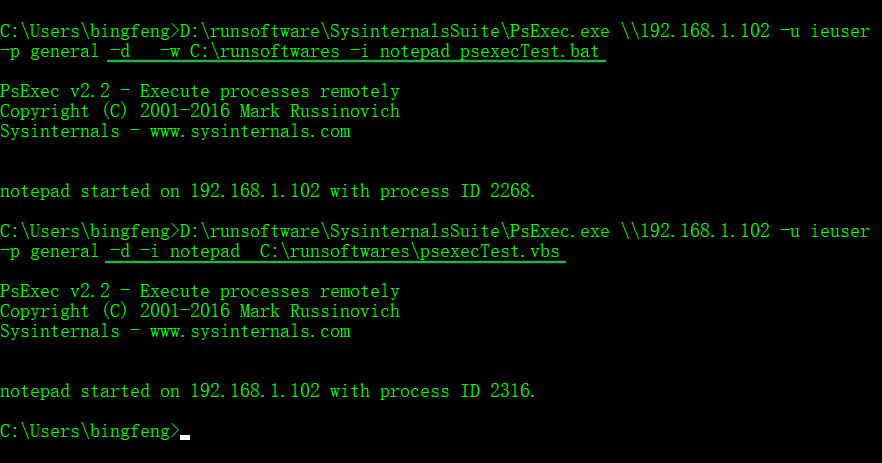
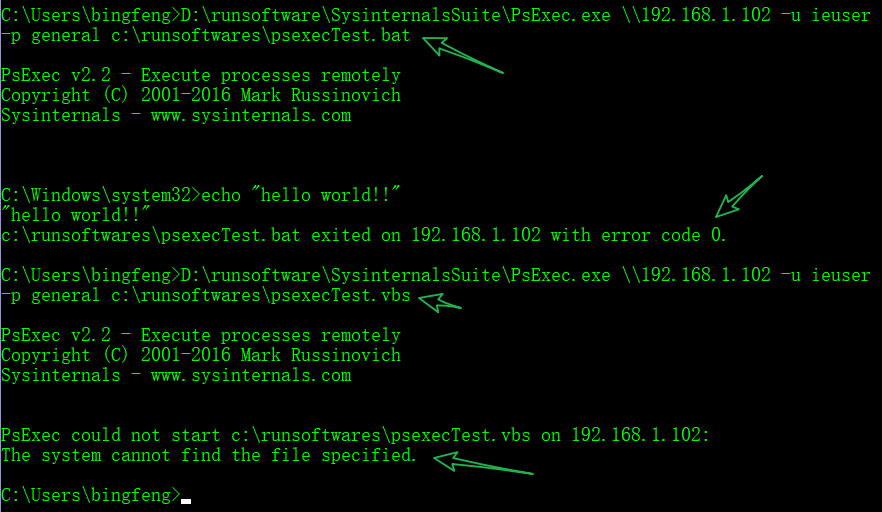

官方介绍下载地址
注意事项
如果你发现你的命令输入没有错误,但是总是提示 “
The network path was not found.” ,那你需要执行下面的命令行之后,即可正常执行 sysinternals 的工具
To start the Remote Registry service via a command line:
> sc start RemoteRegistry
To have it start automatically every time:
> sc config RemoteRegistry start=auto
(重要)To do this to a remote machine named Desktop1:
> sc \\Desktop1 config RemoteRegistry start=autoPsTools
PSTools 本身就有十来个命令行小工具
PsExec – 在远程计算机执行命令
PsFile – 查看打开的网络文件
PsGetSid – 获取 Machine SID
PsInfo – 查看简要系统信息
PsKill – 按进程名或PID杀掉进程
PsList – 列出进程信息
PsLoggedOn – 显示已登的会话
PsLogList – 命令行获取 event log
PsPasswd – 更改用户密码
PsPing – 简单的tcp/udp连接测试工具
PsService – Windows 服务管理命令
PsShutdown – 关机、注销命令
PsSuspend – 暂停或恢复某个进程以上所有命令都可以直接在本地计算机上使用，不过 PsTools 设计出来就是为了方便对远程 PC 进行管理的
PsTools 所有工具连接远程计算机都可以使用同一个通用语法，例如：
psinfo \\pc1,pc2,pc3双斜杠后面可以直接跟计算机名（可以解析netbios）、IP 地址或 FQDN，也可以在命令后跟多台计算机以实现批量
如果你不是以域管理员等有权限的用户来执行命令、没有域环境或者需要手动指定有权限的远程用户，可用 -u 参数指定用户，-p 参数指定密码
如果是域环境，需要将用户写为 DOMAIN\user 样式
psinfo \\computername –u user –p PasswordPsExec
PsExec 是 PsTools 工具系列中最为常用的一个命令行工具，它可以让我们在本地或远程计算机上「运行」任何东西，包括更改注册表、执行脚本或应用程序等。
用法
命令说明:
psexec \\计算机名 <选项> apptorun.exe <参数>例如你想查看某个远程计算机的 TCP/IP 配置，可以使用如下命令：
psexec \\计算机名 -u User -p Password ipconfig如果你将命令输出重定向到一个文件中，可以使用常见的 command.exe > output.txt 方式，这种方式对 PsExec 命令同样适用，例如我们可以使用类似如下命令将 netstat -an 的输出保存到本地文本文件中：
psexec \\计算机名 netstat -an > C:\netstat.txt如果你想将命令的重定向输出结果直接保存到远程 PC 当中，可以使用很少有人知道的 ^ 这个Windows 命令行转义符，例如：
psexec \\计算机名 cmd /c netstat -an ^> C:\users\sysgeek\netstat.txt有时我们需要执行的 CDM 外部命令并没有存在于远程计算机当中，此时我们可以使用 PsExec 的 -c 参数来指定一个存放于管理员本地的外部命令或应用。当我们执行命令时，PsExec 会自动将所指定的应用复制到远程 PC 中执行，并在执行完成后自动删除。例如
psexec \\计算机名 -c autorunsc.exe –accepteula跳过第一次打开软件的条款同意声明
psexec /accepteula如果不指定密码,命令行里面会让你输入密码
D:\runsoftware\SysinternalsSuite\PsExec.exe \\192.168.1.102 -u ieuser netstat -na
Maybe you need to bring up a notepad window on a remote computer. Not a problem. Run notepad.exe with the -i switch and PsExec will open up Notepad.
psexec -i \\REMOTECOMPUTER notepad
- Be sure to also use the
-dswitch to disconnect when the interactive window is brought up though. By default, PsExec will wait for the process it executed to complete. If the remote process (Notepad in this case) is kept running, PsExec will never return control.
像linux的ssh一样使用,远程Windows
psexec \\wss11 -u 666 -p general cmdDo NOT use Ctrl-C to close out of an interactive cmd session. Always use
exit. If you use Ctrl-C, the psexec session will remain running on the remote computer.
psexec 给远程电脑安装软件
psexec \\192.168.2.223 -u administrator -p "" -c D:\download\Apache_OpenOffice_4.1.7_Win_x86_install_en-US.exe /S /v /qb
-p ""表示密码为空-c表示复制文件到远程电脑D:\download\Apache_OpenOffice_4.1.7_Win_x86_install_en-US.exe这个文件是本地电脑的/S /v /qb表示OpenOffice静默安装参数
——————目前该命令存在的问题——————–
使用该命令只能使用远程电脑(目标电脑)的administrator账号,即使用administrators组里面的账号也没有用.不然会提示如下错误:
PsExec could not start Apache_OpenOffice_4.1.7_Win_x86_install_en-US.exe on 192.168.2.223:
The system cannot find the file specified.目前只知道, 执行上面那个命令后,Openoffice 会被 复制到远程计算机的c:\windows 目录,执行完成之后文件即被删除
进阶
打开远程机器的IE浏览器
PsExec.exe \\192.168.1.102 -u ieuser -p general -d -i "C:\Program Files (x86)\Internet Explorer\iexplore.exe"-d表示不等待远端机器执行的结果,命令发送后就立即返回-i在远程端口开启互动界面(GUI).没有这个参数,你在远程机器上是看不到IE浏览器的,只有后台有一个进程而已- 后面的IE路径,因为有空格,需要加上双引号
下图为有无参数-d的区别(两个命令都成功打开了IE)

notepad打开文本
如下两种写法都是可以的:

D:\runsoftware\SysinternalsSuite\PsExec.exe \\192.168.1.102 -u ieuser -p general -d -w C:\runsoftwares -i notepad psexecTest.bat
D:\runsoftware\SysinternalsSuite\PsExec.exe \\192.168.1.102 -u ieuser -p general -d -i notepad C:\runsoftwares\psexecTest.vbs参考
https://blog.xuite.net/jyoutw/xtech/24607577-PsTools+%E4%B9%8B+PsExec+%E7%9A%84%E7%94%A8%E6%B3%95
运行远程pc上的vbs脚本报错
运行bat没有问题,但是vbs会出现The system cannot find the file specified.报错.在不同的电脑测试均出现此问题.目前找不到原因

目前找到该问题的解法,感谢大佬的指路.据说是PATH里找不到执行的文件
在命令里加上 wscript 就行
D:\runsoftware\SysinternalsSuite\PsExec.exe \\192.168.1.102 -u ieuser -p general wscript C:\Users\bingfeng\Documents\script\vbs\psexecTest.vbs参数说明
-a
Separate processors on which the application can run with commas where 1 is the lowest numbered CPU. For example, to run the application on CPU 2 and CPU 4, enter: "-a 2,4"
-c
Copy the specified program to the remote system for execution. If you omit this option the application must be in the system path on the remote system.
-d
Don't wait for process to terminate (non-interactive).
-e
Does not load the specified account's profile.
-f
Copy the specified program even if the file already exists on the remote system.
-i
Run the program so that it interacts with the desktop of the specified session on the remote system. If no session is specified the process runs in the console session. Some have reported best results always using the -s switch with -i due to windows being unintelligible.
-h
If the target system is Vista or higher, has the proc
-l
Run process as limited user (strips the Administrators group and allows only privileges assigned to the Users group). On Windows Vista the process runs with Low Integrity.
-n
Specifies timeout in seconds connecting to remote computers.
-p
Specifies optional password for user name. If you omit this you will be prompted to enter a hidden password.
-r
Specifies the name of the remote service to create or interact. with.
-s
Run the remote process in the System account.
-u
Specifies optional user name for login to computer.
-v
Copy the specified file only if it has a higher version number or is newer on than the one on the remote system.
-w
设置进程的工作目录（相对于远程计算机）
-x
Display the UI on the Winlogon secure desktop (local system only).
-arm Specifies the remote computer is of ARM architecture.
-priority
Specifies -low, -belownormal, -abovenormal, -high or -realtime
-realtime
run the process at a different priority. Use
-background
run at low memory and I/O priority on Vista.
computer
Direct PsExec to run the application on the computer or computers specified. If you omit the computer name PsExec runs the application on the local system, and if you specify a wildcard (\*), PsExec runs
@file
PsExec will execute the command on each of the computers listed in the file.
-accepteula
This flag suppresses the display of the license dialog.
-nobanner
Do not display the startup banner and copyright message.psexec 工作原理
How PsExec Works on Remote Computers
PsExec goes through a few steps to execute programs on remote computers.
Create a PSEXESVC.exe file in C:\Windows.
Create and start a Windows service on the remote computer called PsExec.
Execute the program under a parent process of psexesvc.exe.
When complete, the PsExec Windows service will be stopped and removed.
When the process doesn’t work 100% correctly you may have to manually remove the service using the sc command.
PsFile
- psfile 命令可以显示本地或远程 PC 中通过网络打开的文件，其类似于命令行中的 net file 命令，及 NetworkOpenedFiles 图形界面工具
psfile \\计算机名
- 如果你想中断某个共享的访问连接，可以使用 -c 参数：
psfile \\计算机名 <路径> –c
PsInfo
PsInfo 主要用于显示 Windows 操作系统版本、系统运行时长及个别硬件的简单信息，如果你想获取更详尽的信息，可以使用 -d（磁盘信息）、-h（补丁信息）、-s（已知应用程序版本列表）参数，这样一来就比较像 Windows 内置的 systeminfo 命令行了。
psinfo -d -h -sPsKill
PsKill 看名称就不难猜，它可按进程名或 PID 结束进程，使用 -t 参数可以杀掉整个进程树。
pskill \\计算机名 PsList
它可以通过列表方式看到进程的几乎所有信息，包括线程数
PsLoggedOn
PsLoggedOn 命令主要用于查看本地或远程 PC 上当前登录的用户信息，对于系统管理员来说非常实用。
PsPing
PsPing 是一个可对指定端口进行 TCP 或 UDP 连接测试的工具
PsPasswd
PsPasswd 用于快速更改本地或远程 PC 的用户密码
该命令相较 net user 的好处在于可以一次性批量修改多台计算机的密码，对于域管理员批量重置某些本地账户密码时非常有用
pspasswd \\计算机名 -u User -p Password <账户名称> <新密码>PsSuspend
该命令行工具与 PsKill 比较类似但不是杀掉进程，它主要用于暂停某个进程的工作
要将已暂停的进程恢复到工作状态，只需加上 -r 参数即可
pssuspend \\计算机名 <PID或进程名>PsService
PsService 命令行工具可操作 Windows 中的各种服务，其语法如下
psservice \\计算机名 <操作> <服务名>用的操作有start（启动）、stop（停止）、pause（暂停）、restart（重启），要查看详细参数可以使用 PsService /?
TCPView
TCPView 是用于查看当前 Windows 应用程序和服务连网状态的绝佳工具，通过它我们可以在图形界面中查看到类似使用 netstat 命令输出的大部分信息。
与其它 Sysinternals 工具的颜色标识类似，绿色条目表示刚建立连接、红色表示连接正在关闭，而黄色则表示更改了连接指向
RamMap
RamMap 工具主要用于分析物理内存的使用情况，它以可视化的图形界面进行输出显示。在 RamMap 界面中，你可以查看到非常详细的内存用量，例如：空闲内存、页面缓冲池、非页面缓冲池、已提交和已缓存等条目的详细情况，比任务管理器中的内存显示强大多了。
Autologon
Autologon 可以快速实现Windows自动登录（有登录密码情况下）
在打开之后，只需输入要用于自动登录的账户和密码即可。
其它自动登录的方法
AccessEnum
AccessEnum 是我在做文件夹权限排错时最常用的一个工具，在我们对某个文件夹进行过复杂的权限配置后，AccessEnum 工具可以非常容易帮助我们理清文件夹或注册表的最终访问控制列表。
SigCheck
SigCheck 命令行工具最常用的是 -u 参数，它只报告有问题的文件；-e 参数表示只对可执行文件进行检查。所以，我们可以使用如下命令对 C:\Windows\System32 （或某个其它）文件夹进行快速检查：
sigcheck -e -u C:\Windows\System32在发现异常文件时，可以使用 -v 参数开启 VirusTotal 校验
sigcheck -v -vt <文件名>Contig
contig <文件名>如果你要分析一个文件的碎片而不实际整理，可以使用 -a 参数
du
而 du 是 Sysinternals 套件中的命令行磁盘和文件夹大小查看工具。du 命令行工具的存在主要是因为其显示更为准确，而且在计算空间时不会计数符号链接文件
其中 -n 参数在统计大小时不递归在子文件夹，-v 参数将详细列表显示子文件夹大小（KB），-l 参数可以单独控制子文件夹递归层级（默认为 1）
Disk2vhd
Disk2vhd 小工具可将正在运行计算机的磁盘克隆成 VHD 虚拟磁盘文件，因此它也成为不少虚拟化项目中的 P2V 转换工具
autoruns
粉红色：表示该条目对应的应用没有数字签名、签名不匹配或没有发行商信息
黄色：表示该启动条目对应的文件已经不存在了
绿色：该功能不太常用，简单来说就是我们可以在使用 File — Save 对启动项目进行导出成 .arn 格式进行存储，之后有可能在 Autoruns 里面对启动条目进行了配置，然后再在 File — Compare 里面载入之前导出的 .arn 文件即可对不同时间和状态下 Windows 启动条目进行对比，对比出来的差异将以绿色高亮进行显示。